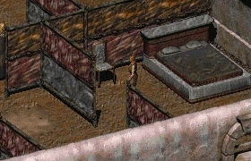
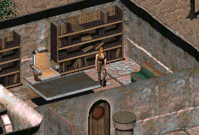

Tandi (タンディ)
―― タンディ
タンディ（2145年 - 2248年）は、シェイディ・サンズの指導者アラデシュ の娘であり、将来の創設者、新カリフォルニア共和国 (New California Republic / NCR) の第2代大統領、そして戦後の世界全体で最も影響力のある人物の一人です。
彼女は Fallout では シェイディ・サンズ に、Fallout 2 では共和国の首都である NCR（はるかに拡大した町）に登場します。彼女の遺産は Fallout: New Vegas で議論されており、彼女の死後に台頭した、より帝国主義的で攻撃的な共和国とは対照的です。
背景
初期の日々
2145年に生まれたタンディは、愛嬌のある表情と、旅や冒険への夢でいっぱいの頭を持った少女でした。幼い頃から、彼女はその容姿の良さを補って余りあるほどの並外れた精神力と快活さを発揮していました。しかし、父のアラデシュは用心深い男であり、彼女を自分の近くに留め置きました。彼女は シェイディ・サンズ での安定した仕事に伴う退屈さを軽蔑していました。
16歳の時にVaultの居住者 (Vault Dweller) と出会った際、この短い出会いは若い彼女に強い印象を残しました。それは、カーンズによる誘拐と、その後の救出によってさらに強化されました。Vaultの居住者がカーンズを虐殺した後、レイダーたちが寄り付かなくなったため、シェイディ・サンズ の町は平和な時期を享受しました。
国家の礎
アラデシュとタンディはこの機会を利用してコミュニティを発展させました。村は繁栄し、やがて新カリフォルニアにおける経済大国となりました。貿易ルートの発展に伴い、町同士の文化交流も進みました。タンディは父を助けて シェイディ・サンズ を拡大し、新カリフォルニア共和国 (NCR) の基礎を築きました。
2186年、新カリフォルニア共和国 (NCR) が設立されました。憲法を起草するために試行評議会政府が結成されました。NCR の理想はカリフォルニア中に着実に広まり、ジャンクタウンは シェイディ・サンズ の最も古く信頼できる貿易相手の一つであったため、NCR の最初の暫定州の一つとなりました。2189年、共和国は5つの州（シェイディ、ロサンゼルス、マクソン、ハブ、デイグロウ）の連邦として投票により成立しました。
2196年にアラデシュが失踪し死亡したと推定された後、彼の娘は全会一致で NCR の第2代大統領に選出されました。彼女は死ぬまで連続するすべての選挙に勝ち続け、満10期を務め上げ、11期目に入っていました。大統領として、タンディは最終戦争後に生まれたどの指導者よりもウェイストランドを統一するために多くのことを成し遂げました。
拡張政策
タンディは父の後を継いで共和国の大統領となり、それ以降、議会と共に NCR を統治しました。彼女は荒野に平和と安定をもたらすために国家を拡大することに焦点を当てていました。彼女の理想はずっと以前にプラグマティズム（実用主義）に置き換えられており、Vault City を脅して NCR に加盟させ、優れた医療技術を供給させるためにニューレノと取引を結ぶことも厭いませんでした。
旅を通じて、選ばれし者 (Chosen One) は北部における共和国の拡大を確保する決定的な要因となり、Vault 15 を巡る紛争を共和国に有利に解決し、タンディの拡大政策を正当化しました。それだけでなく、ジョン・ビショップの主導とタンディ大統領の支援の下、ニューアロヨ、レディング、そして Vault City も NCR の領土となりました。
2248年、タンディ大統領は52年間の在任期間を経て、名前不明の病気により103歳で死去しました。彼女の後継者は副大統領のジョアンナ・チベットでした。しかし、彼女の遺産は生き続け、彼女は現在に至るまで最も人気があり、最も長く務めた NCR 大統領であり続けています。
プレイヤーキャラクターとの関わり
Fallout 1
クエスト Rescue Tandi from the Raiders: タンディは数名のカーンズに捕らえられており、救出する必要があります。救出後、シェイディ・サンズ に戻されるまで、タンディは Vaultの居住者のパーティーに残ります。
印象的な引用句
Fallout 1
「ついに！ 他に話が通じる人がいたわ！ もちろん、あなたはいろんな場所に行っているでしょうから、ここは地獄に違いないわね」
「もしもし、誰かいないの？ ここから出してくれない？ 私をここから出して！」
Fallout 2
「ああ、間違いを犯しているのは分かっているけど……やってみなさい。もし私の言ったことが何か理解できたのならね」
「ああ、ずいぶん昔のことよ！ 当時自分が誰だったかほとんど覚えていないわ。ただの世間知らずな少女だった。あなたが Vaultの居住者 (Vault Dweller) と呼ぶあの人……彼はまだ生きているの？」
タンディは、Fallout シリーズにおいて最も象徴的な「成功した指導者」の一人ですね。
少女から国母へ: Fallout 1 での世間知らずで退屈していた少女が、Fallout 2 では100歳近い老練な大統領として再登場し、巨大国家を率いているという変貌ぶりは、プレイヤーに時間の経過と歴史の重みを感じさせる最高の演出です。
実利主義への転換: 若い頃の理想を捨て、政治的な目的のためにマフィアや傭兵を利用することも厭わなくなった彼女の姿勢は、文明を再建するために必要な「汚れ仕事」を引き受ける覚悟を示しており、単なる英雄ではない深みのあるキャラクター像を作り上げています。
平和の象徴: 彼女の死後、NCR が急速に軍国主義化し、腐敗していく様子と比較すると、彼女がいかにバランス感覚に優れ、カリスマ性を持った指導者であったかが浮き彫りになります。彼女の顔が紙幣に印刷されているのも納得です。

This article uses material from the Fallout wiki at Fandom and is licensed under the Creative Commons Attribution-Share Alike License.